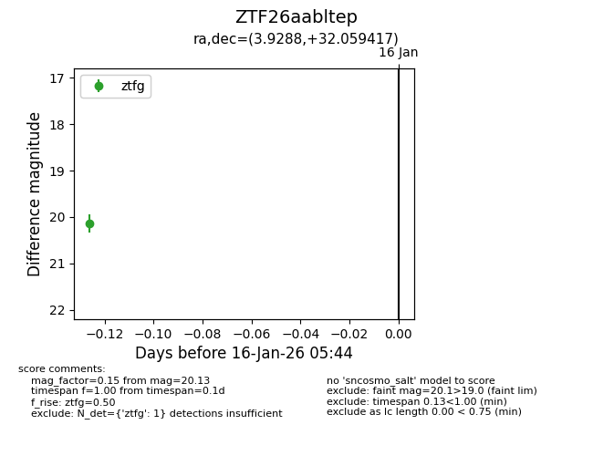
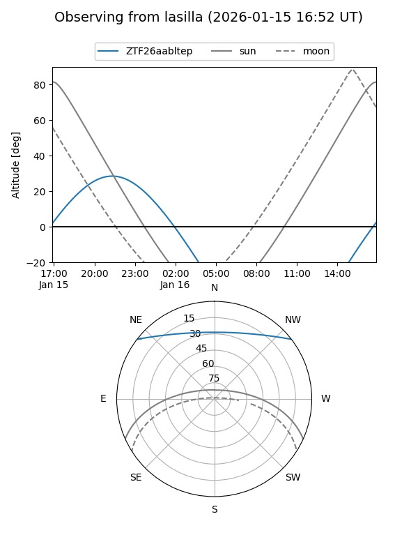
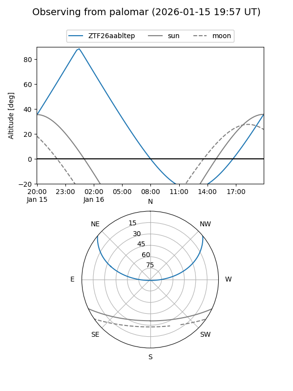

ZTF26aabltep
Target ZTF26aabltep at 2026-01-16 05:45
Aliases and brokers:
FINK: link
Lasair: link
ALeRCE: link
alt names
ZTF26aabltep (ztf,fink_ztf)
Coordinates:
equatorial (ra, dec) = 3.9288,+32.05942
equatorial (HMS+DMS) = 00:15:42.90,+32:03:33.90
galactic (l, b) = (114.1756,-30.20422)
Flags:
Photometry:
last ztfg=20.13
1 ztfg detections
Lightcurve

Visibility


Additional plots